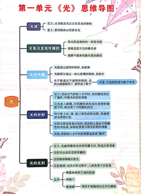

教育周报
第一单元《光》思维导图

光
光源
定义:自身能发光且正在发光的物体
意义:看到物体必须要有光
光是沿直线传播的
阳光射进森林的一束束光线
夜晚直射天空的激光束
烟雾中能看到激光笔的路径
光的传播
光能透过透明的物体,如玻璃
光能部分透过一些比较薄的物体,如纸巾
光不能透过不透明的物体,光的去路被阻挡了,便形成了影子——日食月食的形成与影子有关
光的折射
1. 定义:光由空气斜射入水中时,光的路线发生了偏折,叫做光的折射现象
2. 白光进入棱镜1,不同颜色的光发生折射的程度不同,便出现了不同颜色的光。
为什么会出现不同颜色的光？
白光其实是由多种不同颜色的光混合而成的，比如红、橙、黄、绿、蓝、靛、紫七种颜色，我们把这七种颜色的光叫做单色光。
当白光进入棱镜后，不同颜色的光在棱镜中的传播速度是不一样的。光在真空中的传播速度都是一样快的，但在其他介质中，比如棱镜里，不同颜色的光传播速度就有差别了。一般来说，频率较低(红)的光传播速度相对快一些，频率较高（紫）的光传播速度相对慢一些。
而折射程度是由光在两种不同介质中的传播速度决定的。速度变化大的光折射程度就大，速度变化小的光折射程度就小。所以不同颜色的光在棱镜中发生折射的程度不同，这样就使得它们分散开来，我们也就看到了不同颜色的光。
3. 均匀涂上红、绿、蓝三原色的彩色轮,快速转动会看到白色。
在光学中，红、绿、蓝被称为光的三原色。当均匀涂上这三种颜色的彩色轮快速转动时，人眼会看到白色，这是由于以下几个原因。
首先，人眼具有视觉暂留效应。当彩色轮快速转动时，人眼无法分辨出每一时刻具体的颜色，而是将快速连续出现的不同颜色混合在一起。
其次，红、绿、蓝三种颜色以特定的方式混合可以产生白色。从色彩原理上来说，红色、绿色和蓝色分别对应着不同的波长范围和频率。红色光的波长较长，能量相对较低；蓝色光的波长较短，能量相对较高；绿色光则处于两者之间。当这三种颜色的光以一定的比例混合时，它们能够刺激人眼的三种不同类型的视锥细胞，使大脑产生白色的感觉。
具体而言，红色、绿色和蓝色可以分别激活人眼视网膜上对不同波长敏感的三种视锥细胞。当三种颜色同时以适当的强度刺激这些视锥细胞时，大脑接收到的信号组合就如同看到了白色光。这种现象是基于人眼的生理特性和对光的感知机制。
综上所述，均匀涂上红、绿、蓝三原色的彩色轮快速转动时会看到白色，是视觉暂留效应和光的三原色混合原理共同作用的结果。
4. 太阳光看起来是白色的,但实际上是由不同颜色的光组成,如彩虹便是太阳光折射的现象
一、太阳光的组成
太阳光属于复合光，是由红、橙、黄、绿、蓝、靛、紫等不同颜色的光混合而成。我们平时看到的太阳光是白色，是因为这些不同颜色的光混合在一起，给我们的视觉感受是白色。每种颜色的光都有其特定的波长范围和频率，例如：红色光波长较长，频率较低；蓝色光波长较短，频率较高。
二、折射原理
- 光的折射是指光从一种介质进入另一种介质时，传播方向发生改变的现象。其原因是不同颜色的光在不同介质中的传播速度不同。根据折射定律，入射角和折射角的正弦之比等于两种介质的折射率之比。
- 当太阳光进入雨滴等类似的介质时，就会发生折射。由于雨滴可以近似看作是一个球形的透明介质，太阳光在雨滴的表面发生折射后，不同颜色的光因为其波长和频率的不同，在雨滴中的传播速度也不同，从而导致折射角度不同。例如，波长较长的红色光折射角度相对较小，波长较短的蓝色光折射角度相对较大。
三、彩虹的形成过程
- 首先，当太阳光进入雨滴时，由于雨滴与周围空气是两种不同的介质，太阳光发生折射。不同颜色的光分散开来，按照不同的折射角度传播。
- 然后，在雨滴内部经过一次或多次反射。这个过程中，光的传播方向不断改变，使得不同颜色的光进一步分离。
- 最后，当光从雨滴中射出时，再次发生折射，不同颜色的光以不同的角度出现在观察者的眼中。如果此时观察者站在合适的位置，就能看到由这些分散的不同颜色光组成的彩虹。一般来说，观察者需要背对着太阳，并且太阳的位置要比较低，才能看到明显的彩虹。
综上所述，太阳光看起来是白色，但实际上由不同颜色光组成，而彩虹就是太阳光在雨滴等介质中经过折射、反射等过程后，不同颜色光分散形成的自然现象。
5. 其他:斜射放入水中的铅笔看起来是“断的”
当把铅笔斜着放入水中时，看起来是“断的”，这是由于光的折射现象引起的。
光在不同介质中传播时，会改变传播方向。在这种情况下，光在空气中传播时沿着直线前进，当进入水中时，由于水的折射率与空气不同，光的传播速度发生变化，从而导致光的传播方向发生改变。
具体来说，从铅笔上一点发出的光线，一部分在空气中传播，一部分在水中传播。在空气中的光线进入水中时，会向法线方向偏折。而我们观察铅笔时，是根据进入眼睛的光线来判断物体的位置。由于光的折射，使得我们看到的铅笔在水中的部分位置好像比实际位置高一些，从而产生了铅笔看起来是“断的”的视觉效果。
总之，斜射放入水中的铅笔看起来是“断的”是因为光在空气和水这两种不同介质中传播时发生了折射，改变了光线的传播方向，进而影响了我们对物体位置的判断。
光的反射
定义:光碰到镜面会改变传播方向,形成反射现象
反射光也是沿直线传播的
任何物体都能反射光
反射规律:光在反射过程中,入射角等于反射角
应用
测量地球到月球的距离
照镜子
潜望镜 两块平面镜相对且平行摆放
第一单元《光》科学概念梳理
1.1~1.2 素养提升评价
1.3~1.4素养提升评价
1.5素养提升评价
1.6~1.7 素养提升评价
第二单元《地球表面的变化》思维导图
第二单元《地球表面的变化》科学概念梳理
2.1~2.2 素养提升评价
2.3~2.4素养提升评价
2.5~2.6素养提升评价
2.7 素养提升评价
第三单元《计量时间》思维导图
第三单元《计量时间》科学概念梳理
3.1~3.2 素养提升评价
3.3~3.4素养提升评价
3.5素养提升评价
3.6~3.7 素养提升评价
第四单元《健康生活》思维导图
第四单元《健康生活》科学概念梳理
4.1~4.2 素养提升评价
4.3 素养提升评价
4.4~4.5 素养提升评价
4.6~4.7 素养提升评价
填空题专项素养提升评价
判断题专项素养提升评价
选择题专项素养提升评价(一)
选择题专项素养提升评价(二)
探究题专项素养提升评价(一)
探究题专项素养提升评价(二)
期末素养提升评价
五年级上册科学素养提升评价(第一单元)(卷子另附)
五年级上册科学素养提升评价(第二单元)(卷子另附)
五年级上册科学素养提升评价(第三单元)(卷子另附)
五年级上册科学素养提升评价(第四单元)(卷子另附)
五年级上册科学期中素养提升评价(卷子另附)
五年级上册科学期末素养提升评价(卷子另附)
解释下面的脚注：
-
棱镜：一种由透明材料（如玻璃、水晶等）制成的光学器件，通常具有三角形或多边形的截面。白光进入棱镜后，由于不同颜色的光在棱镜中的折射率不同，会发生折射从而分散成不同颜色的光谱。 ↩